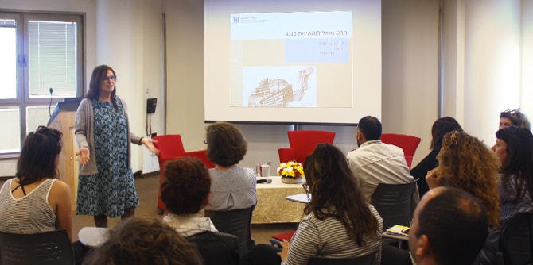
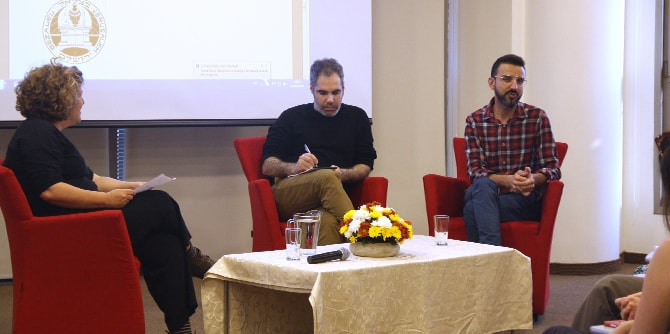

On March 7, 2018, the Mandel Center for Leadership in the Negev hosted a meeting attended by leading figures in the fields of leadership, management, and culture, including faculty and graduates of Sapir College’s Department of Cultural Studies, Creation and Production, and faculty members of the Mandel Center. The meeting was held in advance of the launch of the Center's new program in cultural leadership for the Negev.
The event began with a talk from
Hagar Buhbut, technology correspondent for the Ynet news site, who discussed technological innovation and various internet media. During the lecture, she explored how culture is perceived in these different media, how to successfully “tell a story” about cultural activity, and how cultural institutions can adopt new technological methods.

Next,
Professor Dana Arieli gave a lecture titled “Art, Society, and Politics.” Arieli spoke about issues related to autonomy in art, and the extent to which art requires mediation and translation. She also discussed politics and culture, and how culture becomes commodified and loses its meaning.
After her lecture, Professor Arieli moderated a panel discussion on culture and local activism with
Nadav Mishali, the founder and director of the Ofakim Cinematheque, and
Idan Avisar, director of the Goodman Acting School of the Negev. This discussion explored local leadership and cultural leadership. The two panelists emphasized the importance of growing communities centered on cultural activity, and the importance of being familiar with one’s audience and location as a key part of one’s artistic endeavors.
Lastly, the participants broke off into discussion groups to think together about management, leadership, and culture. The group discussions generated a feeling that this event marked the beginning of a community of cultural leaders who are interested in continuing to meet in order to learn together and to foster discourse about art and culture based on local identity, for the benefit of the entire Negev region.

{kind=link}
{kind=link}